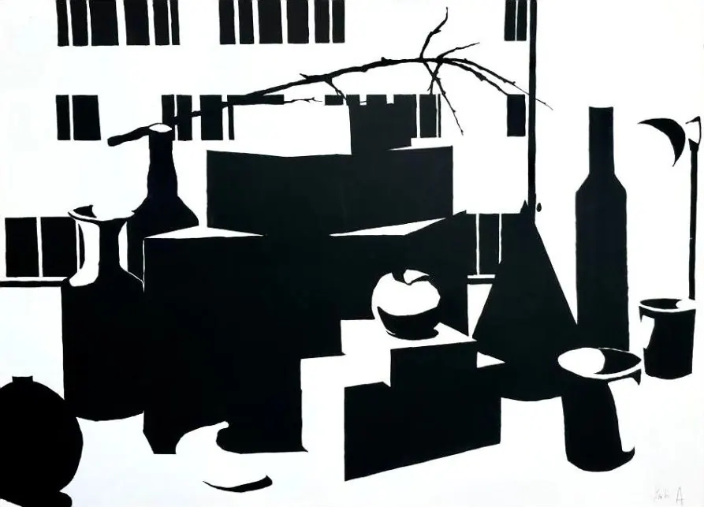
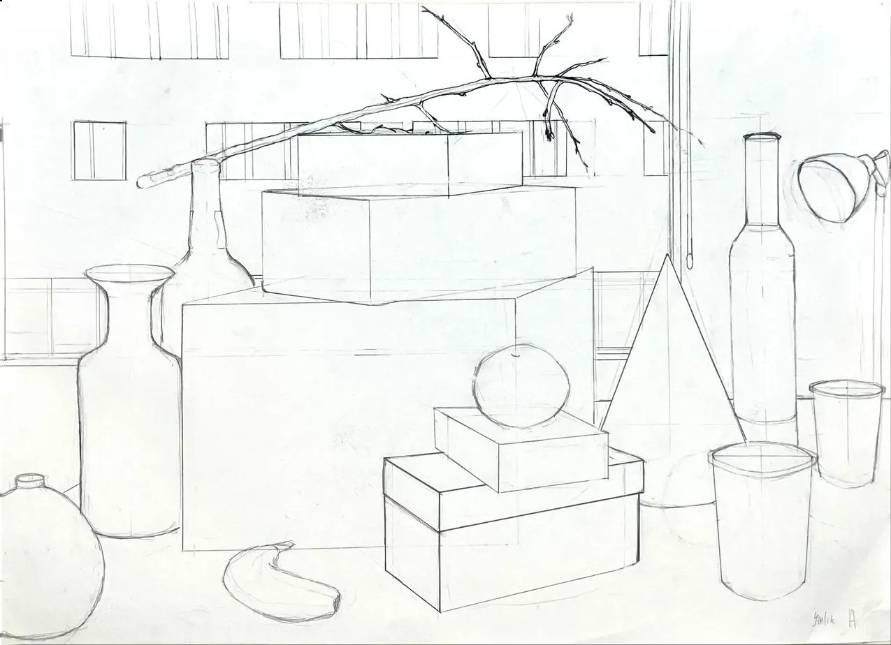
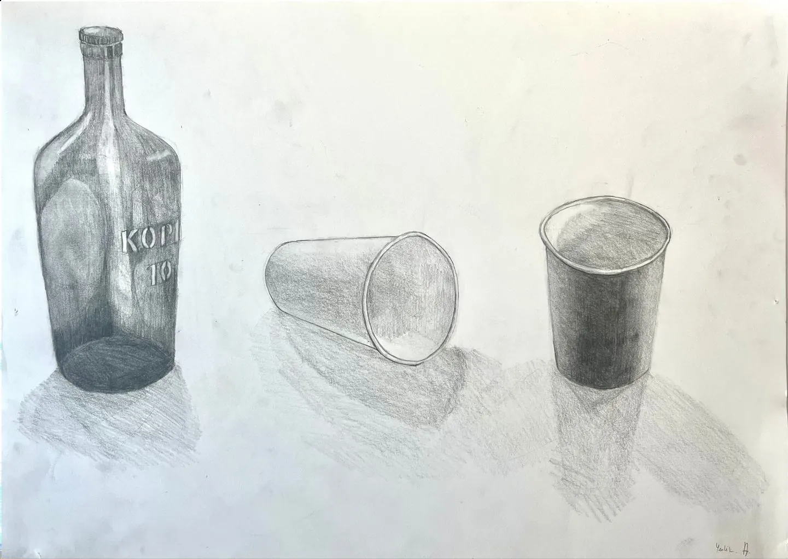
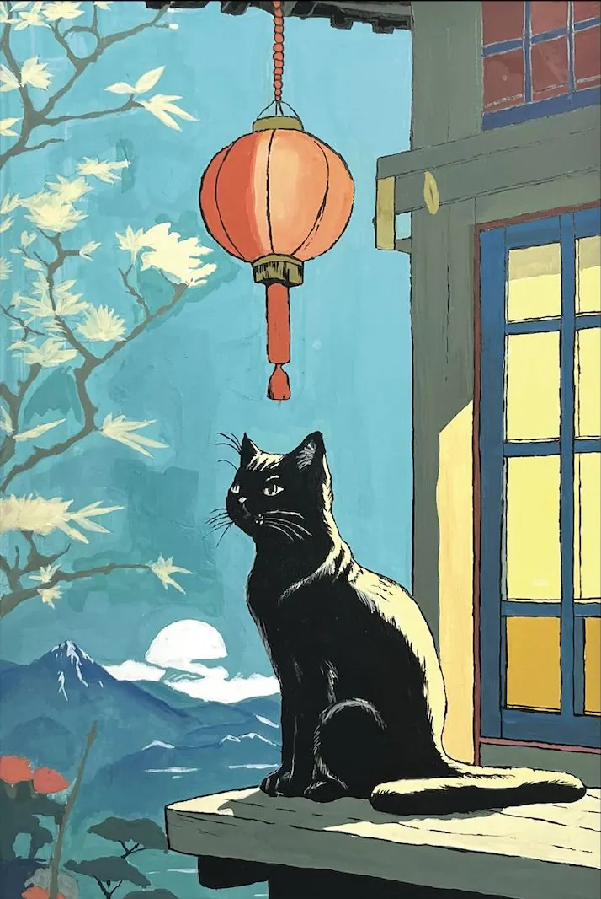
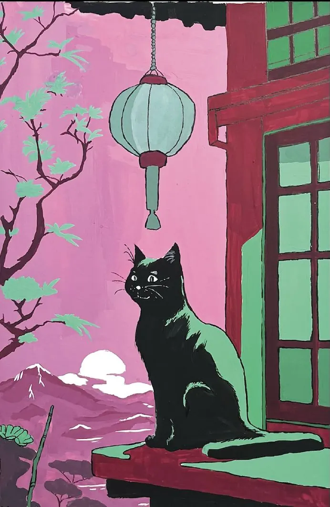
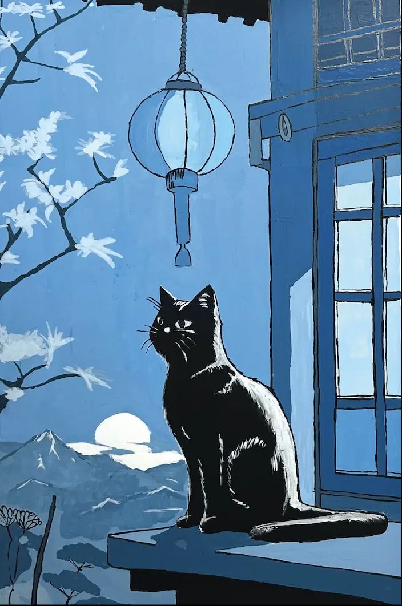
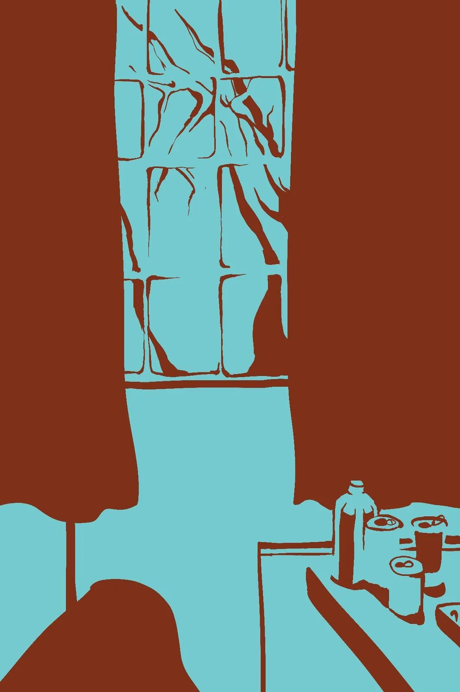
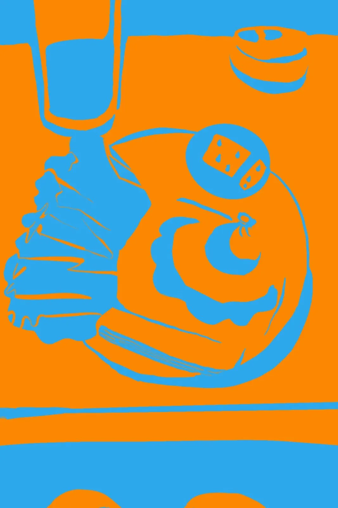
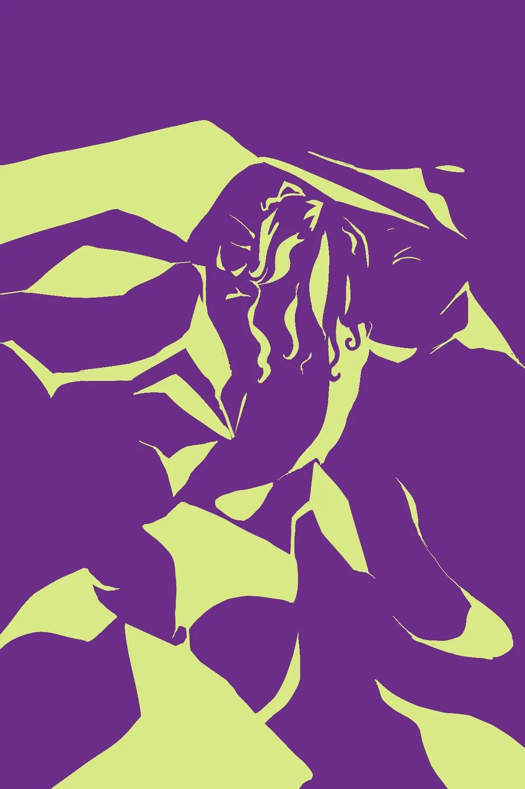

10
Foundations
Drawing, colour and illustration
- Year
- 2025
- Discipline
- Coursework
- Context
- Basic Drawing, Colour Design, Illustration for Designers (NTU ADM)
- Tools
- Pencil, gouache
Overview
The groundwork under the projects: a year of drawing, colour and illustration, each learned through finished exercises.
01
Drawing
Linear practice, blind contour, tone, perspective, self-portrait, and a final still life resolved in positive and negative space.



02
Colour
Theory, mixing, phenomena and harmony in gouache, then one painting repainted in its original, complementary and monochrome palettes, and a colour analysis of a Kazakh painting applied to products.



03
Illustration
A digitalised sketchbook of shape, line and colour studies, ending in flat colour-block postcards of everyday places, two or three colours each.


